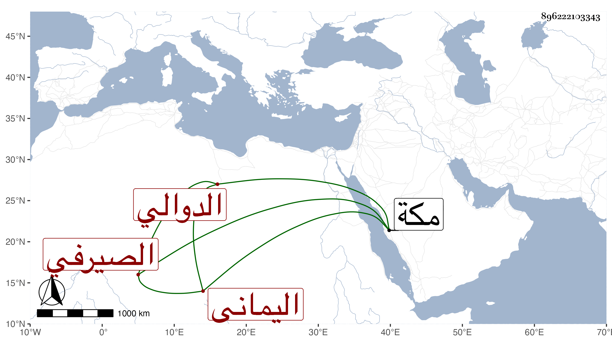

0902Sakhawi.DawLamic.ITO20230111-ara1.EIS1600.896222103343
Biography ID: 896222103343
إبراهيم بن الشرف أبي القسم بن إبراهيم بن عبد الله بن محمد بن عمر بن جعمان بالفتح الصيرفي الدوالي اليماني من بيت الفقيه أبي عجيل الشافعي الآتي أبوه . ولد في سنة إحدى وثلاثين وثمانمائة ببيت الفقيه ونشأ فقرأ القرآن واشتغل بالفرائض والعربية وكذا بالفقه والحديث على أبيه فلما مات جد في الفقه وأخذه عن خاله الجمال محمد الطاهر بن أحمد بن جعمان والطيب الناشري بل وأخذ أصول الفقه عن الشرف السيفي الشيرازي وبرع وتصدى في بلده للتدريس والإفتاء وولي قضاءها وحج وزار مع شكالة وخط وضبط وورع . مات في يوم الأربعاء سابع عشر صفر سنة سبع وتسعين وصلينا عليه صلاة الغائب بمكة وقد كتب إلي بترجمته الكمال موسى الدوالي وأثبت مولده كما صدرنا به وأنه ترافق معه في الطلب وقرأ على أبيه البخاري والشفا والمصابيح والأذكار وقطعة من وسيط الواحدي وجملة من كتب النحو وحقق من العلوم الفقه والفرائض والجبر والمقابلة والنحو ومهر في ذلك ودرسه مع مشاركة في الأصول والبيان بل كان من أذكياء العالم جيد النظم والنثر وبلغني أنه كتب على بلوغ المرام لشيخنا شيئا شبه الشرح ولكن لم أقف عليه ولم أسمع به منه وإنما أعلمني به غيره وأما الرياسة والسؤدد والجاه العريض والتفات السلطان فمن دونه إليه فلم يكن من يشاركه فيه بل كان فردا في ذلك لا ترد شفاعته ولذا تزايد الأسف عليه من الناس قال وكان يرتاح إلى لقائي ويتحسر على عدم مساعدة الوقت في الاجتماع رحمه الله وإيانا .
